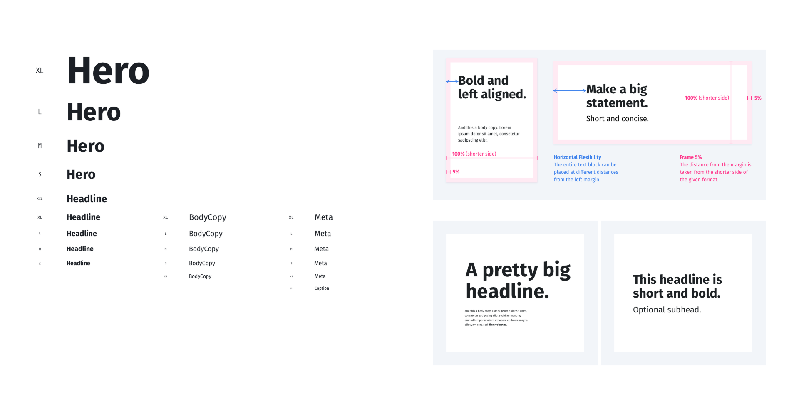
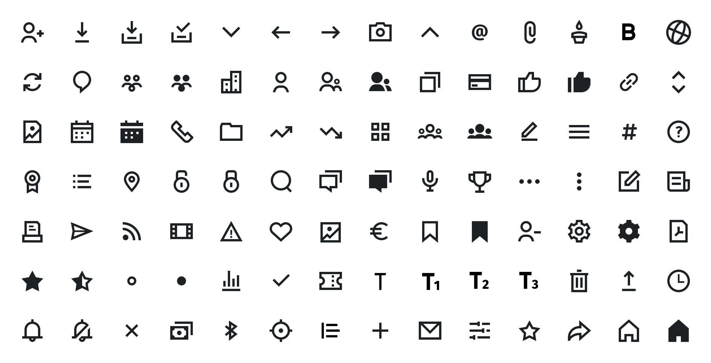
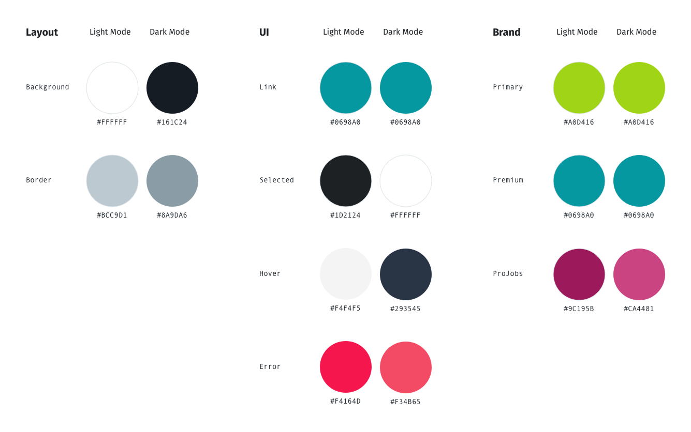

Typography
Unified type scale with semantic role assignments (display, body, label, caption) that mapped to platform-native equivalents.

A shared design foundation for creating consistent experiences across a complex product ecosystem.
When XING expanded from a single Hamburg office to a multi-office European organization, its design practice scaled without a shared foundation. Three separate design systems had emerged organically across web, iOS, and Android teams - each internally consistent, none of them talking to the others. The result was visual fragmentation, duplicated effort, and a growing gap between what designers handed off and what engineers shipped.
Core contributor to the design system workstream. I was involved from the audit phase through to the foundations definition and initial component library build. My focus was the interface inventory, the semantic color and typography systems, and the motion foundation.
From there, we worked foundation-up using an atomic design approach: define the tokens before designing the components, define the components before assembling the patterns. The aim was a system where changing a foundational decision - a brand color, a type scale step - propagated correctly everywhere, rather than requiring manual updates across hundreds of components.
Unified type scale with semantic role assignments (display, body, label, caption) that mapped to platform-native equivalents.

Consolidated icon library with consistent sizing, stroke weight, and optical alignment rules.

Role-based color tokens (surface, content, interactive, feedback) rather than raw hex values, enabling theming and future brand updates.

4px base grid with named steps, shared across all three platforms.
Easing curves, duration ranges, and usage principles for transitions and micro-interactions.
We started with a full interface inventory - a systematic audit of every component, pattern, and visual decision across all three systems. The inventory surfaced the redundancy (three buttons, seven card variants, no consistent icon size scale) and gave us a shared vocabulary for the consolidation conversations.

Start with recurring user needs, identify where interfaces can share a pattern, then document the decisions that make that pattern useful. This keeps the system connected to the product work it is meant to support.
As new needs emerge, teams can extend the shared language deliberately rather than creating disconnected conventions.